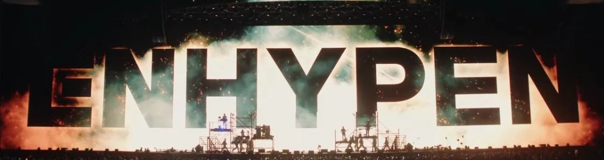
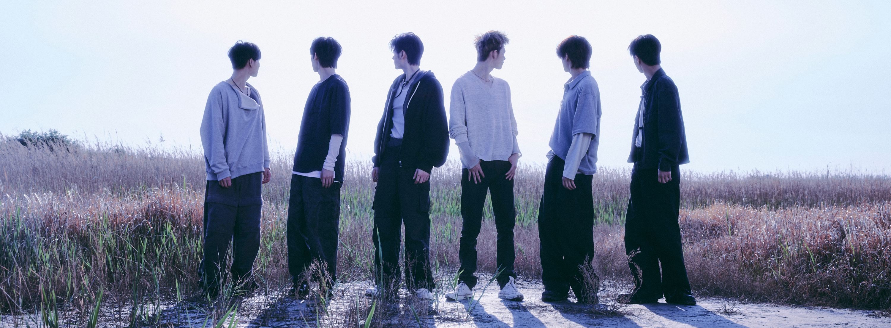
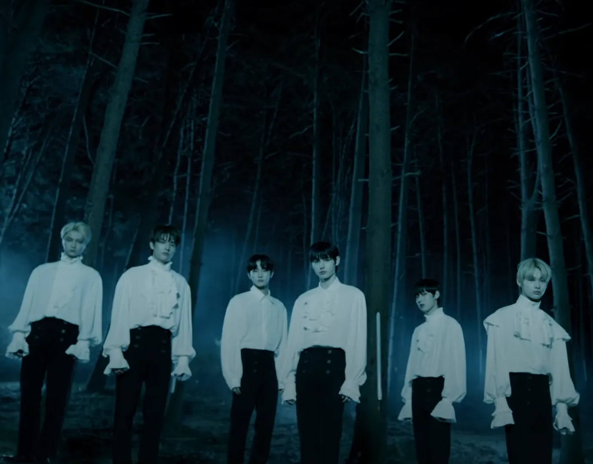
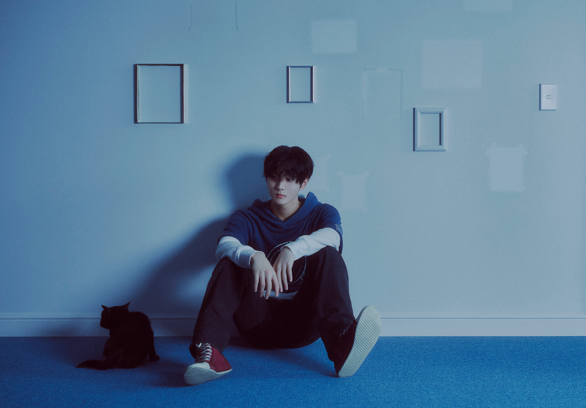
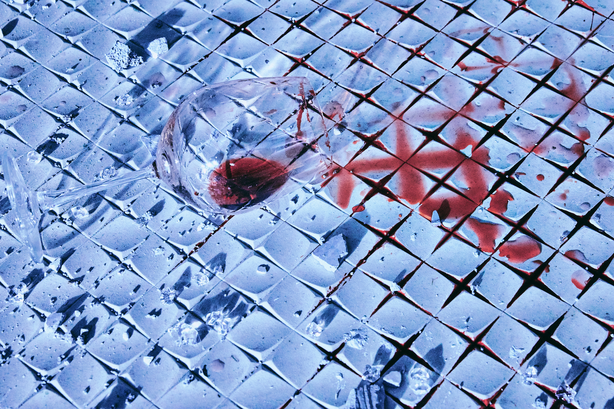
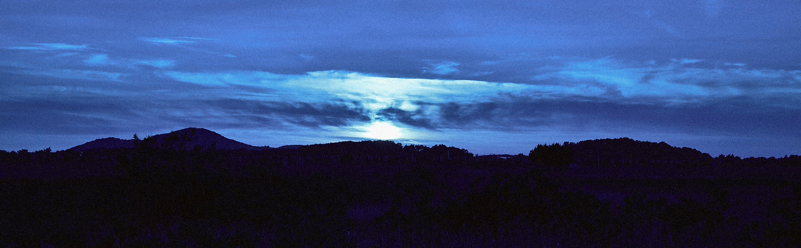
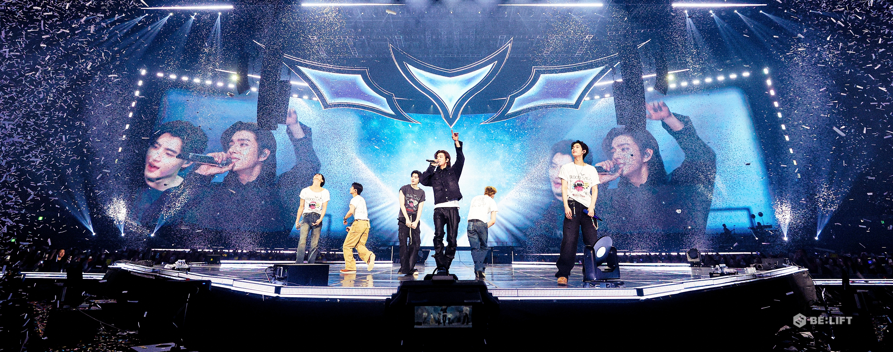

a personal collection of
EN- ARCHIVE

000/ Welcome to the EN- ARCHIVE
Beyond the Music.
An exploration of sound, identity, and evolution.
Welcome to EN-ARCHIVE, a digital space dedicated to exploring the music, artistry, and creative evolution of ENHYPEN.
Beyond their discography, ENHYPEN has developed a distinctive artistic identity through interconnected narratives, visual storytelling, and evolving musical concepts. EN-ARCHIVE brings together these elements, tracing the group's origins, defining characteristics, and milestones throughout their journey.
From the stories behind each era to the emotions expressed through their music, discover the different dimensions of ENHYPEN's creative world.

A Visual Experience.
Every photograph throughout EN-ARCHIVE serves as a gateway to ENHYPEN's music and performances. Click on any image to discover a corresponding song or stage, adding another dimension to the stories presented throughout the archive.

001/ About ENHYPEN: The Introduction
Introducing ENHYPEN.
Connected by a name. Defined by a shared vision.
ENHYPEN (엔하이픈) is a six-member South Korean boy group under BELIFT LAB, consisting of Jungwon, Jay, Jake, Sunghoon, Sunoo, and Ni-Ki.
Formed through the music competition program I-LAND, the group debuted on November 30, 2020, with their first mini album, BORDER : DAY ONE.
Combining diverse musical influences with synchronized choreography and concept-driven storytelling, ENHYPEN has developed a distinctive artistic identity that extends beyond conventional musical releases.
Behind the Name

The name ENHYPEN derives inspiration from the hyphen (-), a symbol that connects separate words to create new meanings.
This symbolism reflects the group's founding concept of bringing together individuals with different backgrounds and experiences to form a collective identity. It also represents the principles of connection, discovery, and growth that underpin ENHYPEN's artistic direction.
On the Global Stage
Since their debut, ENHYPEN has steadily expanded their international presence, reaching audiences worldwide through successful album releases, extensive world tours, and performances across major international venues.
Their growing influence reflects not only their commercial success but also their ability to connect with a diverse global audience through music, performance, and a distinctive artistic identity. As their discography and international reach continue to evolve, ENHYPEN has established a prominent position within contemporary K-pop.

002/ The Identity
The Art of Connection.
Identity. Transformation. Fate.
Beyond their music, ENHYPEN has developed a distinctive artistic universe shaped by recurring themes, symbolism, and interconnected narratives. Their visual concepts and storytelling explore the complexities of identity, human relationships, and the boundaries between reality and imagination.
01/ Connection

Where different paths intersect.
Connection lies at the foundation of ENHYPEN's identity. Reflected in the meaning of their name, it represents the relationships, experiences, and shared journeys that bring individuals together.
02/ Transformation

The process of becoming.
Transformation is a recurring theme throughout ENHYPEN's work, reflecting growth, uncertainty, and the evolution of identity. Their concepts explore the transition between different stages of life and the experiences that shape personal change.
03/ Fate

Between destiny and choice.
Elements of fate, desire, and the supernatural frequently appear throughout ENHYPEN's conceptual storytelling. Through symbolic imagery and interconnected narratives, their work explores the relationship between destiny, emotion, and individual choice.
Together, these themes establish a creative identity that extends across music, visual design, and storytelling.

003/ The Journey: From Debut to the Present
An Evolving Journey.
Tracing the milestones of ENHYPEN's musical evolution.
From their debut in 2020 to their expanding international presence, ENHYPEN's career reflects a continuous evolution in sound, performance, and artistic direction.
2020-2021 / The Beginning

Beginning with BORDER : DAY ONE, ENHYPEN introduced a musical narrative centered on connection, uncertainty, and the transition into a new world. Subsequent releases, including BORDER : CARNIVAL and DIMENSION : DILEMMA, expanded these themes while establishing the group's distinctive sound and performance style.
2022-2023 / The Expansion

As their international presence grew, ENHYPEN entered a period of musical and conceptual exploration. The MANIFESTO era introduced a more assertive artistic direction, while DARK BLOOD and ORANGE BLOOD developed the group's supernatural storytelling through themes of love, sacrifice, and identity.
2024-Present / The Evolution

With ROMANCE : UNTOLD and DESIRE : UNLEASH, ENHYPEN continued to explore new dimensions of romance, desire, and emotional expression. The subsequent THE SIN releases further expanded their conceptual universe, reflecting an artistic direction that continues to develop through music, performance, and visual storytelling.
An evolving sound. An unfolding story.

004/ Editor’s Note: A Personal Touch
Behind the Archive.
Beyond the archive, a personal perspective.
Every collection begins with something worth remembering.
What began as an interest in ENHYPEN's music gradually developed into a deeper appreciation for the artistry behind it. Beyond the melodies and performances, it was the intricate storytelling, recurring symbolism, and connections between different eras that made their work particularly compelling.
Over time, that appreciation extended beyond the music itself. From experiencing performances in person to discovering the subtle details woven throughout each release, every encounter offered a different perspective on the creative world ENHYPEN continues to build.
EN-ARCHIVE is an attempt to bring those elements together. Not simply as a record of releases and milestones, but as a space to explore the details, narratives, and artistic choices that give their work its distinct character.
After all, an archive is more than a collection of what has been. It is also a reflection of what remains meaningful.
— From the Editor
005/ Explore More in the Lore
Beyond the Archive.
The story doesn't end here.
EN-ARCHIVE is only a small collection of the music, stories, and moments that define ENHYPEN. Continue exploring their world through their official platforms.